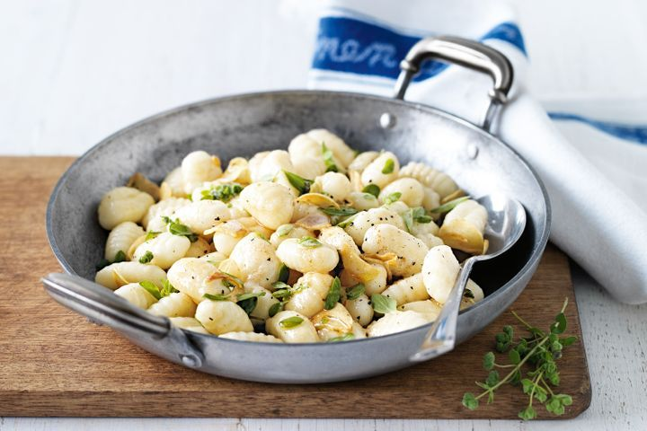

Gnocchi with burnt butter and oregano

Ingredients
- 2 x 500g pkts potato gnocchi
- 100g butter
- 2-3 garlic cloves, thinly sliced
- 1/2 cup fresh oregano leaves
Steps
- Cook gnocchi in a large saucepan of boiling water following packet directions. Drain. Return to pan.
- Meanwhile, heat the butter in a small saucepan over medium heat until just foaming.
Add the garlic and season with salt and pepper. Simmer until the butter just starts to brown.
- Add the oregano to the butter mixture. Cook for a further 1 minute.
- Pour the butter mixture over the gnocchi and shake the pan to coat.